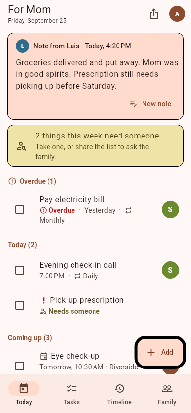

Know who's doing what for Mom.
One shared list for a parent's care: what needs doing, who's on it, and what already happened. Send the plan to your family group chat in one tap — nobody else has to install anything.
Join the beta waitlistBeta in preparation. Free during testing. iPhone and Android.

Built for the person holding it all together
Every task has an owner
Groceries, bills, rides, appointments. Each one shows who's doing it — or clearly "needs someone".
Works with your group chat
Tap "Send update" and paste a clean summary into WhatsApp or Messages. Your siblings stay where they already are.
A note for the next person
"Groceries delivered. Prescription still to pick up." Baton can draft it from today's list.
Repeats that don't pile up
Weekly shopping and monthly bills come back on schedule, even if one was late.
A shared tablet at Mom's?
Switch who's using Baton so the timeline shows who did what.
Private by design
No account, no ads, no trackers. Everything stays on your phone. Export or delete any time.
What your family chat receives
Mom — update for Fri, Sep 25 OVERDUE • Yesterday: Pay electricity bill — Sam TODAY • 7:00 PM: Evening check-in call — Sam • ❗ Pick up prescription — needs someone COMING UP • Tomorrow, 10:30 AM: Eye check-up (Riverside Vision Centre) — Ana DONE TODAY ✓ Weekly groceries — Luis 1 thing still needs someone — can you take it?
Sample text generated by the app with fictional names.
What Baton is not
Baton helps families organise who does what. It is not a medical service, doesn't track medications or symptoms, and doesn't give medical advice. For health questions, contact a doctor or pharmacist. In an emergency, call your local emergency number.